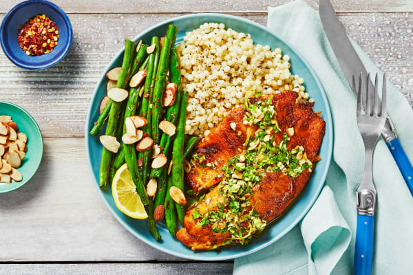

Tilapia with Almond-Parsley Gremolata!

The Healthiest and Most Fillingiest Meal
This meal was taken from HelloFresh and is one of my favorites for its ability to be healthy and filling! It's not a very difficult recipe and can feed 2-3 people.
Ingedients
- Lemon, 1 unit
- Garlic, 1 clove
- Parsley, 1/4oz
- Green Beans, 6oz
- Tilapia, 11oz
- Fry Seasoning, 1 tablespoon
- Israeli Couscos, 2.5oz
- Sliced Almonds, 1/2oz
- Garlic Herb Butter, 2 tablespoons
- Chili Flakes, 1 tablespoon
Steps
- Adjust rack to top position (top and middle positions for 4 servings) and preheat oven to 425 degrees. Bring a medium pot of salted water to a boil. Wash and dry all produce. Zest and quarter lemon (for 4, zest 1 lemon and quarter both). Mince or grate garlic. Finely chop parsley. In a small bowl, combine parsley, 3 TBSP olive oil (5 TBSP for 4), a pinch of garlic and lemon zest, and lemon juice to taste. Season with salt and pepper; set aside.
- Toss green beans on one side of a baking sheet with a drizzle of olive oil, salt, and pepper. Pat tilapia dry with paper towels; rub all over with olive oil, Fry Seasoning, salt, and pepper. Place on empty side of same sheet. Roast on top rack until tilapia is cooked through and green beans are tender, 12-15 minutes. (For 4 servings, divide between 2 baking sheets; roast green beans on top rack and tilapia on middle rack.)
- Meanwhile, once water is boiling, add couscous to pot. Cook until tender, 6-8 minutes. Drain thoroughly. Melt garlic herb butter in empty pot over medium heat. Return couscous to pot and stir until coated. Taste and season with salt and pepper. Turn off heat; keep covered until ready to serve.
- While couscous cooks, heat a medium, dry pan over medium-high heat. Add almonds and toast, stirring occasionally, until golden brown, 2-4 minutes. Turn off heat. Transfer to a cutting board; finely chop half the almonds.
- Stir chopped almonds into bowl with gremolata. Add a small pinch of chili flakes if desired. Season with salt, pepper, and a squeeze of lemon juice to taste.
- Divide couscous, green beans, and tilapia between plates. Spoon almond parsley gremolata over tilapia. Scatter remaining almonds over green beans; add a pinch of chili flakes if desired. Serve with any remaining lemon wedges on the side.